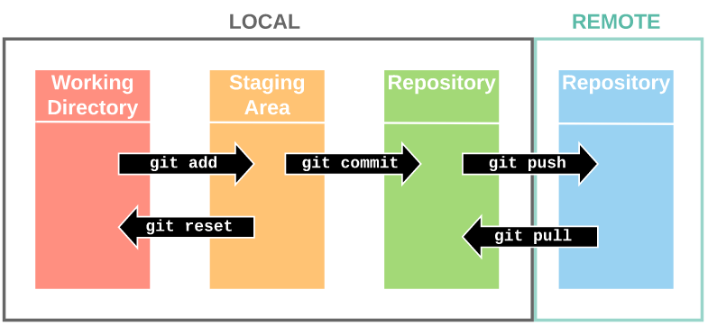

Versionner son code et travailler collaborativement avec Git
Présentation des principes du contrôle de version et du travail collaboratif avec Git et son écosystème.
Dérouler les slides ci-dessous ou cliquer ici pour afficher les slides en plein écran.
Le contrôle de version
Pourquoi faire ?
Le développement rapide de la data science au cours de ces dernières années s’est accompagnée d’une complexification substantielle des projets. Par ailleurs, les projets sont de plus en plus collaboratifs, que ce soit dans le cadre d’équipes dans un contexte professionnel ou bien pour des contributions à des projets open-source. Naturellement, ces évolutions doivent nous amener à modifier nos manières de travailler pour gérer cette complexité croissante et continuer à produire de la valeur à partir des projets de data science.
Pourtant, tout data scientist s’est parfois demandé :
- quelle était la bonne version d’un programme
- qui était l’auteur d’un bout de code en particulier
- si un changement était important ou juste un essai
- comment fusionner des programmes
- etc.
Et il n’est pas rare de perdre le fil des versions de son projet lorsque l’on garde trace de celles-ci de façon manuelle.
Exemple de contrôle de version fait “à la main”

Pourtant, il existe un outil informatique puissant afin de répondre à tous ces besoins : la gestion de version (version control system (VCS) en anglais). Ses avantages sont incontestables et permettent de facilement :
- enregistrer l’historique des modifications d’un ensemble de fichiers
- revenir à des versions précédentes d’un ou plusieurs fichiers
- rechercher les modifications qui ont pu créer des erreurs
- travailler simultanément sur un même fichier sans risque de perte
- partager ses modifications et récupérer celles des autres
- proposer des modifications, les discuter, sans pour autant modifier la dernière version existante
- identifier les auteurs et la date des modifications
En outre, ces outils fonctionnent avec tous les langages informatiques car ils reposent sur la comparaison des lignes et des caractères des programmes, indépendamment du langage. En bref, c’est la bonne manière pour partager des codes et travailler à plusieurs sur un projet de data science. En réalité, il ne serait pas exagéré de dire que l’utilisation du contrôle de version est la bonne pratique la plus fondamentale de tout projet faisant intervenir du code, et qu’elle conditionne largement toutes les autres.
Pourquoi Git ?
Plusieurs logiciels de contrôle de version existent sur le marché. En principe, le logiciel Git, développé initialement pour fournir une solution décentralisée et open-source dans le cadre du développement du noyau Linux, est devenu largement hégémonique. Aussi, toutes les application de ce cours s’effectueront à l’aide du logiciel Git.
Pourquoi GitHub ?
Travailler de manière collaborative avec Git implique de synchroniser son répertoire local avec une copie distante, située sur un serveur hébergeant des projets Git. Ce serveur peut être un serveur interne à une organisation, ou bien être fourni par un hébergeur externe. Les deux alternatives les plus populaires en la matière sont GitHub et GitLab. Dans ce cours, nous utiliserons GitHub, qui est devenu au fil des années la référence pour l’hébergement des projets open-source. En pratique, les deux services sont relativement semblables, et tous les concepts présentés se retrouvent sous une forme similaire sur les deux plateformes.
Des bases de Git
Ce cours part du principe que les lecteurs sont déjà familiers avec l’utilisation de Git, au travers de projets individuels ou collectifs. Aussi, nous rappelons dans cette section les notions essentielles de Git, mais nous ne présenterons pas leur implémentation pratique. Le lecteur souhaitant un rappel plus complet peut par exemple se référer à la formation au travail collaboratif avec Git et RStudio donnée à l’Insee, dont sont issues de nombreuses ressources utilisées dans ce chapitre.
Principes et commandes usuelles
Le graphique suivant illustre les principes fondamentaux de Git.
Git tout-en-un (Source) 
Lorsqu’on utilise Git, il est important de bien distinguer ce qui se passe en local (sur son poste, sur le serveur sur lequel on travaille…) de ce qui se passe en remote, i.e. en intéragissant avec un serveur distant. Comme le montre le graphique, l’essentiel du contrôle de version se passe en réalité en local.
En théorie, sur un projet individuel, il est même possible de réaliser l’ensemble du contrôle de version en mode hors-ligne. Pour cela, il suffit d’indiquer à Git le projet (dossier) que l’on souhaite versionner en utilisant la commande git init. Cette commande a pour effet de créer un dossier .git à la racine du projet, dans lequel Git va stocker tout l’historique du projet (commits, branches, etc.) et permettre de naviguer entre les versions. A cause du . qui préfixe son nom, ce dossier est généralement caché par défaut, ce qui n’est pas problématique dans la mesure où il n’y a jamais besoin de le parcourir ou de le modifier à la main en pratique. Retenez simplement que c’est la présence de ce dossier .git qui fait qu’un dossier est considéré comme un projet Git, et donc que vous pouvez utilisez les commandes usuelles de Git dans ce dossier à l’aide d’un terminal : - git status : affiche les modifications du projet par rapport à la version précédente ; - git add chemin_du_fichier : ajoute un fichier nouveau ou modifié à la zone de staging de Git en vue d’un commit ; - git add -A : ajoute tous les fichiers nouveaux ou modifiés à la zone de staging ; - git commit -m "message de commit" : crée un commit, i.e. une photographie des modifications (ajouts, modifications, suppressions) apportées au projet depuis la dernière version, et lui assigne un message décrivant ces changements. Les commits sont l’unité de base de l’historique du projet construit par Git.
En pratique, travailler uniquement en local n’est pas très intéressant. Pour pouvoir travailler de manière collaborative, on va vouloir synchroniser les différentes copies locales du projet à un répertoire centralisé, qui maintient de fait la “source de vérité” (single source of truth). Même sur un projet individuel, il fait sens de synchroniser son répertoire local à une copie distante pour assurer l’intégrité du code de son projet en cas de problème matériel.
En général, on va donc initialiser le projet dans l’autre sens : - créer un nouveau projet sur GitHub - générer un jeton d’accès (personal access token) - cloner le projet en local via la méthode HTTPS : git clone https://github.com/<username>/<project_name>.git
Le projet cloné est un projet Git — il contient le dossier .git — synchronisé par défaut avec le répertoire distant. On peut le vérifier avec la commande remote de Git :
terminal
$ git remote -vorigin https://github.com/linogaliana/ensae-reproductibilite-website.git (fetch)
origin https://github.com/linogaliana/ensae-reproductibilite-website.git (push)Le projet local est bien lié au répertoire distant sur GitHub, auquel Git donne par défaut le nom origin. Ce lien permet d’utiliser les commandes de synchronisation usuelles : - git pull : récupérer les changements (fetch) sur le remote et les appliquer au projet local - git push : envoyer les changements locaux sur le remote
Implémentations
Git est un logiciel, qui peut être téléchargé sur le site officiel pour différents systèmes d’exploitation. Il existe cependant différentes manières d’utiliser Git : - le client en ligne de commande : c’est l’implémentation standard, et donc la plus complète. C’est celle qu’on utilisera dans ce cours. Le client Git est installé par défaut sur les différents services du SSP Cloud (VSCode, RStudio, Jupyter, etc.) et peut donc être utilisé via n’importe quel terminal. La documentation du SSP Cloud détaille la procédure ; - des interfaces graphiques : elles facilitent la prise en main de Git via des guides visuels, mais ne permettent pas de réaliser toutes les opérations permises par Git - l’interface native de RStudio pour les utilisateurs de R : très complète et stable. La formation au travail collaboratif avec Git et RStudio présente son utilisation de manière détaillée ; - le plugin Jupyter-git pour les utilisateurs de Python : elle implémente les principales features de Git, mais s’avère assez instable à l’usage.
Bonnes pratiques
Le contrôle de version est une bonne pratique de développement en soi… mais son utilisation admet elle même des bonnes pratiques qui, lorsqu’elles sont appliquées, permettent d’en tirer le plus grand profit.
Que versionne-t-on ?
Uniquement des fichiers texte
A chaque commit, Git calcule les différences entre les versions successives du projet, afin de ne pas avoir à stocker une image complète de ce dernier à chaque fois. C’est ce qui permet aux projets Git de rester très légers par défaut, et donc aux différentes opérations impliquant le remote (clone, push, pull..) d’être très rapides.
La contrepartie de cette légèreté est une contrainte sur les types d’objets que l’on doit versionner. Les différences sont calculables uniquement sur des fichiers de type texte : codes source, fichiers texte, fichiers de configuration non-sensibles… Voici donc une liste non-exhaustive des extensions de fichier que l’on retrouve fréquemment dans un dépôt Git d’un projet R ou Python : .py, .R, .Rmd, .txt, .json, .xml, .yaml, .toml, et bien d’autres.
En revanche tous les fichiers binaires — pour faire simple, tous les fichiers qui ne peuvent pas être ouverts dans un éditeur de texte basique sans produire une suite inintelligible de caractères — n’ont généralement pas destination à se retrouver sur un dépôt Git. Du fait de leur formatage (binaire), Git ne peut pas calculer les différences entre versions pour ces fichiers et c’est donc le fichier entier qui est sauvegardé dans l’historique à chaque changement, ce qui peut très rapidement faire croître la taille du dépôt. Pour éviter de versionner ces fichiers par erreur, on va les ajouter au fichier .gitignore (cf. supra).
Pas de données
Comme expliqué en introduction, le fil rouge de ce cours sur les bonnes pratiques est l’importance de bien séparer code, données et environnement d’exécution afin de favoriser la reproductibilité des projets de data science. Ce principe doit s’appliquer également à l’usage du contrôle de version, et ce pour différentes raisons.
A priori, inclure ces données dans un dépôt Git peut sembler une bonne idée en termes de reproductibilité. En machine learning par exemple, on est souvent amené à réaliser de nombreuses expérimentations à partir d’un même modèle appliqué à différentes transformations des données initiales, transformations que l’on pourrait versionner. En pratique, il est généralement préférable de versionner le code qui permet de générer ces transformations et donc les expérimentations associées, dans la mesure où le suivi des versions des datasets peut s’avérer rapidement complexe. Pour de plus gros projets, des alternatives spécifiques existent : c’est le champ du MLOps, domaine en constante expansion qui vise à rendre les pipelines de machine learning plus reproductibles.
Enfin, la structure même de Git n’est techniquement pas faite pour le stockage de données. Si des petits datasets dans un format texte ne poseront pas de problème, des données volumineuses (à partir de plusieurs Mo) vont faire croître la taille du dépôt et donc ralentir significativement les opérations de synchronisation avec le remote.
Pas d’informations locales
Là encore en vertu du principe de séparation données / code/ environnement, les données locales, i.e. spécifiques à l’environnement de travail sur lequel le code a été exécuté, n’ont pas vocation à être versionnées. Par exemple, des fichiers de configuration spécifiques à un poste de travail, des chemins d’accès spécifiques à un ordinateur donné, etc. Cela demande une plus grande rigueur lors de la construction du projet, mais garantit par là même une meilleure reproductiblité pour les futurs utilisateurs du projet.
Pas d’outputs
Les outputs d’un projet (graphiques, publications, modèle entraîné…) n’ont pas vocation à être versionné, en vertu des différents arguments présentés ci-dessus : - il ne s’agit généralement pas de fichiers de type texte ; - le code source du projet doit dans tous les cas permettre des les regénérer à l’identique.
Utiliser un .gitignore
On a listé précédemment un large éventail de fichiers qui n’ont, par nature, pas vocation à être versionné. Bien entendu, faire attention à ne pas ajouter ces différents fichiers au moment de chaque git add serait assez pénible. Git simplifie largement cette procédure en nous donnant la possibilité de remplir un fichier .gitignore, situé à la racine du projet, qui spécifie l’ensemble des fichiers et types de fichiers que l’on ne souhaite pas versionner dans le cadre du projet courant.
De manière générale, il y a pour chaque langage des fichiers que l’on ne souhaitera jamais versionner. Pour en tenir compte, une première bonne pratique est de choisir le .gitignore associé au langage du projet lors de la création du dépôt sur GitHub. Ce faisant, le projet est initialité avec un gitignore déjà existant et pré-rempli de chemins et de types de fichiers qui ne sont pas à versionner. Regardons un extrait du gitignore Python pour comprendre sa structure et son fonctionnement.
pip-log.txt
__pycache__/
*.logChaque ligne du gitignore spécifie un élément à ignorer du contrôle de version, élément qui peut être un ficher/dossier ou bien une règle concernant un ensemble de fichiers/dossiers. Sauf si spécifié explicitement, les chemins sont relatifs à la racine du projet. L’extrait du gitignore Python illustre les différentes possibilités :
- ligne 1 : ignore le fichier
pip-log.txt; - ligne 2 : ignore le dossier
__pycache__/; - ligne 3 : ignore tous les fichiers dont l’extension est
.log.
De nombreuses autres possiblités existent, et sont détaillées par exemple dans la documentation de Git.
Messages des commits
Le commit est l’unité de temps de Git, et donc fondamentalement ce qui permet de remonter dans l’historique d’un projet. Afin de pouvoir bénéficier à plein de cet avantage de Git, il est capital d’accompagner ses commits de messages pertinents, en se plaçant dans la perspective que l’on peut être amené plusieurs semaines ou mois plus tard à vouloir retrouver du code dans l’historique de son projet. Les quelques secondes prises à chaque commit pour réfléchir à une description pertinente du bloc de modifications que l’on apporte au projet peuvent donc faire gagner un temps précieux à la longue.
De nombreuses conventions existent pour rédiger des messages de commit pertinents. Nous rappelons ici les plus importantes :
- contenu : le message doit détailler le pourquoi plutôt que le comment des modifications. Par exemple, plutôt que “Ajoute le fichier test.py”, on préférera écrire “Ajout d’une série de tests unitaires” ;
- style : le message doit être à l’impératif et former une phrase (sans point à la fin) ;
- longueur : le message du commit doit être court (< 72 caractères). S’il n’est pas possible de trouver un message de cette taille qui résume le commit, c’est généralement un signe que le commit regroupe trop de changements (cf. point suivant). Le fait de devoir mettre des
+ou des&/etdans un message de commit pour séparer les changements est également un bon indicateur d’un commit trop gros.
Fréquence des commits
De manière générale, il est conseillé de réaliser des commits réguliers lorsque l’on travaille sur un projet. Une règle simple que l’on peut par exemple appliquer est la suivante : dès lors qu’un ensemble de modifications forment un tout cohérent et peuvent être résumées par un message simple, il est temps d’en faire un commit. Cette approche a de nombreux avantages :
- si l’on fait suivre chaque commit d’un
push— ce qui est conseillé en pratique — on s’assure de disposer régulièreemnt d’une copie de ses travaux, ce qui limite le risque de perte ; - il est plus facile de revenir en arrière en cas d’erreur si les commits portent sur des changements ciblés et cohérents ;
- le processus de review d’une pull request est facilité, car les différents blocs de modification sont plus clairement séparés ;
- dans une approche d’intégration continue — concept que l’on verra en détail dans le chapitre sur la mise en production — faire des commits et des PR régulièrement permet de déployer de manière continue les changements en production, et donc d’obtenir les feedbacks des utilisateurs et d’adapter plus rapidement si besoin.
Git avancé
Dans la section précédente, on a présenté une manière de travailler assez basique : dès lors que l’on a réalisé un ensemble de modifications cohérent sur le projet, on produit un commit, ce qui permet de construire progressivement l’historique du projet. Si cette méthode peut tout à fait convenir à des petits projets, elle montre rapidement ses limites dès lors que les projets gagnent en maturité ou deviennent collaboratifs : - on va généralement vouloir garder une version “propre” du projet (ex : une application fonctionnelle), et expérimenter par ailleurs pour développer de nouvelles fonctionnalités ; - on peut être amené à travailler à plusieurs sur les mêmes fichiers et ce de façon simultanée, ce qui peut générer des conflits complexes à gérer
On le voit bien : dès lors qu’un projet gagne de l’ampleur, il est impératif de s’interroger en amont sur l’organisation du travail et de trouver des manières de collaborer efficacement. On va pour cela s’inspirer de modèles d’organisation (workflows) qui ont fait leurs preuves, ce qui va nous amener à nous intéresser à une des fonctionnalités majeures de Git : les branches. On verra également que les services tels que GitHub ou GitLab fournissent des fonctionnalités additionnelles (issues, pull requests et forks) qui permettent de grandement faciliter le travail collaboratif avec Git.
Branches
Concept
La possibilité de créer des branches est l’une des fonctionnalités majeures de Git. La création d’une branche au sein d’un projet permet de diverger de la ligne principale de développement (généralement appelée master, terme tendant à disparaître au profit de celui de main) sans impacter cette ligne. Cela permet de séparer le nouveau développement et de faire cohabiter plusieurs versions, pouvant évoluer séparément et pouvant être facilement rassemblées si nécessaire.
Pour comprendre comment fonctionnent les branches, il nous faut revenir un peu plus en détail sur la manière dont Git stocke l’historique du projet. Comme nous l’avons vu, l’unité temporelle de Git est le commit, qui correspond à une photographie à un instant donné de l’état du projet (snapshot). Chaque commit est uniquement identifié par un hash, une longue suite de caractères. La commande git log, qui liste les différents commits d’un projet, permet d’afficher ce hash ainsi que diverses métadonnées (auteur, date, message) associées au commit.
terminal
$ git logcommit e58b004d3b68bdf28093fe6ad6036b5d13216e55 (HEAD -> master, origin/master, origin/HEAD)
Author: Lino Galiana <xxx@xxx.fr>
Date: Tue Mar 22 14:34:04 2022 +0100
ajoute code équivalent python
...Une branche est simplement un pointeur vers un commit. Dans l’exemple précédent, on a imprimé les informations du dernier commit en date. La branche principale (master) pointe vers ce commit. Si l’on faisait un nouveau commit, le pointeur se décalerait et la branche master pointerait à présent sur le nouveau commit.
Branches locales
Dans ce contexte, créer une nouvelle branche (en local) revient simplement à créer un nouveau pointeur vers un commit donné. Supposons que l’on crée une branche testing à partir du dernier commit.
terminal
$ git branch testing
$ git branch- Crée une nouvelle branche
- Liste les branches existantes
- 1
- La branche sur laquelle on se situe
- 2
- La nouvelle branche créée
La figure suivante illustre l’effet de cette création sur l’historique Git.

Désormais, deux branches (master et testing) pointent vers le même commit. Si l’on effectue à présent des commits sur la branche testing, on va diverger de la branche principale, ce qui permet de développer une nouvelle fonctionnalité sans risquer d’impacter master.
Pour savoir sur quelle branche on se situe à instant donné — et donc sur quelle branche on va commiter — Git utilise un pointeur spécial, appelé HEAD, qui pointe vers la branche courante. On comprend à présent mieux la signification de HEAD -> master dans l’output de la commande git log vu précédemment. Cet élément spécifie la situation locale actuelle et signifie : on se situe actuellement sur la branche master, qui pointe sur le commit e58b004. Pour changer de branche, i.e. déplacer le HEAD, on utilise la commande git checkout. Par exemple, pour passer de la branche master sur laquelle on est par défaut à la branche testing :
terminal
$ git checkout testing # Changement de brancheSwitched to branch 'testing'On se situe désormais sur la branche testing, sur laquelle on peut laisser libre cours à sa créativité sans risquer d’impacer la branche principale du projet. Mais que se passe-t-il si, pendant que l’on développe sur testing, un autre membre du projet commit sur master ? On dit que les historiques ont divergé. La figure suivante illustre à quoi ressemble à présent l’historique du projet (et suppose que l’on est repassé sur master).

Cette divergence n’est pas problématique en soi : il est normal que les différentes parties et expérimentations d’un projet avancent à différents rythmes. La difficulté est de savoir comment réconcillier les différents changements si l’on décide que la branche testing doit être intégrée dans master. Deux situations peuvent survenir : - les modifications opérées en parallèle sur les deux branches ne concernent pas les mêmes fichiers ou les mêmes parties des fichiers. Dans ce cas, Git est capable de fusionner (merge) les changements automatiquement et tout se passe sans encombre ; - dans le cas contraire, survient un merge conflict : les branches ont divergé de telle sorte qu’il n’est pas possible pour Git de fusionner les changements automatiquement. Il faut alors résoudre les conflits manuellement.
La résolution des conflits est une étape souvent douloureuse lors de l’apprentissage de Git. Aussi, nous conseillons dans la mesure du possible de ne pas fusionner des branches manuellement en local avec Git — c’est d’ailleurs pour cette raison que nous n’avons pas détaillé les commandes pour le faire. Dans les sections suivantes, nous verrons comment une bonne organisation préalable du travail en équipe, combinée aux outils collaboratifs fournis par GitHub, permet de rendre le processus de fusion des branches largement indolore.
Branches remote
Rappellons que toutes les opérations que nous avons effectuées sur les branches dans cette section se sont passés en local, le répertoire distant est resté totalement inchangé. Pour pouvoir collaborer sur une branche ou bien en faire une pull request (cf. supra), il faut pousser la branche sur le répertoire distant. La commande est simple : git push origin <branche>.
terminal
$ git push origin testingCounting objects: 24, done.
Delta compression using up to 8 threads.
Compressing objects: 100% (15/15), done.
Writing objects: 100% (24/24), 1.91 KiB | 0 bytes/s, done.
Total 24 (delta 2), reused 0 (delta 0)
To https://github.com/linogaliana/ensae-reproductibilite-website
* [new branch] testing -> testingWorkflow collaboratif
Comme on l’a vu précédemment, si le modèle des branches de Git semble idéal pour gérer le travail collaboratif et asynchrone, il peut également s’avérer rapidement complexe à manipuler en l’absence d’une bonne organisation du travail en équipe. De nombreux modèles (“workflows”) existent en la matière, avec des complexités plus ou moins grandes selon la nature du projet. Nous conseillons d’adopter dans la plupart des cas un modèle très simple : le GitHub Flow.
Le GitHub Flow est une méthode d’organisation minimaliste du travail collaboratif, qui est progressivement devenue la norme dans les projets open-source. Elle est résumée par la figure suivante, dont nous détaillons par la suite les différentes étapes.

Définition des rôles des contributeurs
Dans tout projet collaboratif, une première étape essentielle est de bien délimiter les rôles des différents contributeurs. Les différents participants au projet ont en effet généralement des rôles différents dans l’organisation, des niveaux différents de pratique de Git, etc. Il est important de refléter ces différents rôles dans l’organisation du travail collaboratif.
Sur les différents hébergeurs de projets Git, cela prend la forme de rôles que l’on attribue aux différents membres du porjet. Les mainteneurs sont les seuls à pouvoir écrire directement sur master. Les contributeurs sont quant à eux tenus de développer sur des branches. Cela permet de protéger la branche principale, qui doit rester une version propre et jamais compromise du projet.
Notons que la possibilité de donner des rôles sur les projets GitHub n’est possible que dans le cadre d’organisations (payantes), donc dans un contexte professionnel ou de projets open-source d’une certaine ampleur. Pour des petits projets, il est nécessaire de s’astreindre à une certaine rigueur individuelle pour respecter cette organisation.
Développement sur des branches de court-terme
Les contributeurs développent uniquement sur des branches. Il est d’usage de créer une branche par fonctionnalité, en lui donnant un nom reflétant la fonctionnalité en cours de développement (ex : ajout-tests-unitaires). Les différents contributeurs à la fonctionnalité en cours de développement font des commits sur la branche, en prenant bien soin de pull régulièrement les éventuels changements pour ne pas risquer de conflits de version. Pour la même raison, il est préférable de faire des branches dites de court-terme, c’est à dire propres à une petite fonctionnalité, quite à diviser une fonctionnalité en séries d’implémentations. Cela permet de limiter les éventuels conflits à gérer lors de la fusion finale de la branche avec master.
Pull Request
Une fois la série de modifications terminée, vient le temps de rassembler les différents travaux, par l’intermédiaire de la fusion entre la branche et master. Il faut alors “demander” de fusionner (pull request) sur GitHub. Cela ouvre une page liée à la pull request, qui rappelle les différents changements apportés et leurs auteurs, et permet d’entamer une discussion à propos de ces changements.
Processus de review
Les différents membres du projet peuvent donc analyser et commenter les changements, poser des questions, suggérer des modifications, apporter d’autres contributions, etc. Il est par exemple possible de mentionner un membre de l’équipe par l’intermédiaire de @personne. Il est également possible de procéder à une code review, par exemple par un développeur plus expérimenté.
Résolution des éventuels conflits
En adoptant cette manière de travailler, master ne sera modifiée que via des pull requests. Il ne devrait donc jamais y avoir le moindre conflit à régler sur master, les seuls conflits possibles se passent sur les branches. Par exemple, dans le cas où une autre pull request aurait été fusionnée sur master depuis l’ouverture de la pull request en question.
Dans le cas d’un conflit à gérer, le conflit doit être résolu dans la branche et pas dans master. Voici la marche à suivre :
- appliquez le conseil de survie : faites une copie de sauvegarde de votre clone
- dans votre clone, placez vous sur la branche en question :
git checkout nom-de-la-branche - fusionnez
masterdans la branche :git merge master - résolvez les éventuels conflits dans les fichiers concernés
- finalisez le commit de merge et poussez-le sur la branche remote, ce qui le fera apparaître dans la pull request
Fusion de la branche
Si tout est en ordre, la branche peut être fusionnée. Seuls les mainteneurs, qui ont les droits sur master, peuvent fusionner la pull request. En termes d’historique du projet, deux choix sont possibles : - “Create a merge commit” : tous les commits réalisés sur la branche apparaîtront dans l’historique du projet ; - “Squash and merge” : les différents commits réalisés sur la branche seront rassemblés en un commit unique. Cette option est généralement préférable lorsqu’on utilise des branches de court-terme : elles permettent de garder l’historique plus lisible.
Contribuer à un projet open-source
Il peut arriver que l’on veuille contribuer à un projet sur lequel on n’est pas enregistré comme collaborateur. C’est par exemple le cas dès lors que l’on souhaite contribuer à un projet open-source. Il existe différentes manières de proposer une contribution, et les possibilités de contribution sont généralement formalisées.
Utiliser les issues
La manière la plus simple de contribuer à un projet open-source est d’ouvrir une issue. Sur GitHub, cela se fait sur la page du projet, sous l’onglet Issue (cf. documentation officielle). Les issues peuvent avoir différentes nature : - suggestion d’amélioration (sans code) - notification de bug - rapports d’expérience - etc.
Les issues sont une manière très peu couteuse de contributer à un projet, mais leur importance est capitale, dans la mesure où il est impossible pour les développeurs d’un projet de penser en amont à toutes les utilisations possibles et donc tous les bugs possibles d’une application.
Proposer une pull request
Une autre manière, plus ambitieuse, de contribuer à l’open source est de proposer des pull requests. Concrètement, l’idée est de proposer une amélioration ou bien de résoudre un bug sous forme de code, que les mainteneurs du projet peuvent ensuite décider d’intégrer au code existant.
La procédure pour proposer une pull request à un projet sur lequel on n’a aucun droit est très similaire à celle décrite ci-dessus dans le cas normal. La principale différence est que, du fait de l’absence de droits, il est impossible de pousser une branche locale sur le répertoire du projet. On va donc devoir créer au préalable un fork, i.e. une copie du projet que l’on crée dans son espace personnel sur GitHub. C’est sur cette copie que l’on va appliquer la procédure décrite précédemment, en prenant bien soin de travailler sur une branche et non sur master. Une fois les modifications pertinentes effectuées sur la branche du fork, GitHub propose de créer une pull request sur le dépôt original. Cette pull request sera alors visible des mainteneurs du projet, qui pourront l’évaluer et décider d’adopter (ou non) les changements proposés.
Respecter les règles de contribution
Vouloir contribuer à un projet open-source est très louable, mais ne peut pas pour autant se faire n’importe comment. Un projet est constitué de personnes, qui ont développé ensemble une manière de travailler, des standards de bonnes pratiques, etc. Pour s’assurer que sa contribution ne reste pas lettre morte, il est indispensable de s’imprégner un minimum de la culture du projet.
Pour faciliter les contributions, les projets open-source spécifient bien souvent la manière dont les utilisateurs peuvent contribuer ainsi que le format attendu. En général, ces règles de contribution sont spécifiées dans un fichier CONTRIBUTING.md situé à la racine du projet GitHub, ou a défaut dans le README du projet. Il est essentiel de bien lire ce document s’il existe afin de s’assurer de proposer des contributions pertinentes.